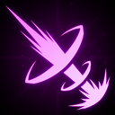
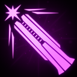
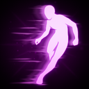
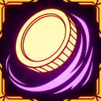
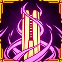

Gunmancer
只要有足够的赛博强化，再加上一门脑机接口 Blast Cannon，如今谁都能成为 Sorcerer。
技能
主技能：
VA-11 Blast Cannon
发射一次远距离命中扫描攻击，造成 50 点电击伤害。
此外，在攻击命中的位置产生一次小爆炸，造成该投射物 50% 的伤害。
或
Kinetic Fletchette
发射一枚远距离投射物，造成 75 点物理伤害。该投射物可以穿透多个敌人。
15% 概率施加 BLEEDING 状态效果。
副技能：
Firebomb
发射一枚受重力影响很强的爆炸投射物，造成 50 点火焰伤害。
该攻击命中后会在较大范围内爆炸，造成投射物 100% 的伤害。
Photon Condenser
快速发射高速子弹，造成光耀伤害。
5% 概率施加 WEAKENED 状态效果。
Antimatter Accelerator
发射一片散射弹幕，造成暗影伤害。按住可收窄散布。
5% 概率施加 BREACHED 状态效果。
辅助技能：Airblast
将自己向上弹射，然后短时间内大幅降低重力。短暂延迟后，你下一次发射的技能会造成双倍伤害。
如果要冲刺，你必须站定，并在朝另一个方向移动时按下辅助技能键。
弹射冷却 12 秒。
冲刺冷却 3 秒。
职业升级
| 图片 | 稀有度 | 技能 | 说明 | 叠加类型 |
|---|---|---|---|---|
 |
普通 | Gunmancer: Overcharged (VA-11 Blast Cannon) | VA-11 Blast Cannon 光束宽度 +5%，每层 +5%；电击伤害 +15%，每层 +15%。 | 线性 |
 |
普通 | Gunmancer: Proficiency (Firebomb) | Firebomb 爆炸半径 +1m，每层 +1m；火焰伤害 +7%。 | 双曲 |
| 普通 | Gunmancer: Proficiency (Photon Condenser) | 蓄力 Photon Condenser 投射物数量 +1，每层 +1；光耀伤害 +7%。 | 双曲 | |
| 普通 | Gunmancer: Proficiency (Antimatter Accelerator) | Antimatter Accelerator 投射物数量 +1，每层 +1；暗影伤害 +5%。 | 双曲 | |
 |
普通 | Gunmancer: Sidestep | 使用 Airblast Dash 会让你获得短暂的 HASTE 状态效果。 | |
 |
传奇 | Gunmancer: Marksman (VA-11 Blast Cannon) | 周期性抛出一枚硬币。用 Blast Cannon 击中硬币会把炮击导向最近的敌人，并使伤害提高 400%。硬币尺寸 +10%。 | |
 |
传奇 | Gunmancer: Mastery | 蓄力射击伤害 +50%。 | 线性 |
使用 Kinetic Fletchette 意味着你无法获得 Gunmancer: Overcharged 和 Gunmancer: Marksman。